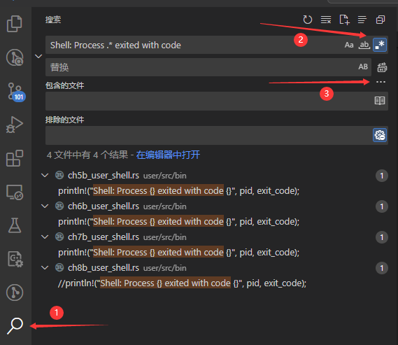

寻找报错位置
在这一小节中，我们会尝试分析 hellostd 测例的报错情况，并介绍三种常见的内核调试技巧。巧合的是，我们的调试过程恰好会用到每一项技巧，因此你可以跟着指导书走一遍整个流程以熟悉它们，而不只是枯燥地听课看文档。
调试技巧：全局搜索输出
按照上一节的实验准备下载好测例后，我们来尝试在目前的内核中运行 hellostd 这个测例。在 os/ 目录下 make run，然后在弹出的终端中输入 hellostd，大概率会得到下面这样一行错误输出：
Rust user shell
>> hellostd
Shell: Process 2 exited with code -11
如果运行结果是
exited with code -4而不是-11，说明你在上一个实验中的实现碰巧“跳过”了这一个 bug。此时可以阅览一下本节的内容，然后下一节再跟着做
显然，这个测例运行失败了，但是是在哪里失败的呢？我们可以尝试全局搜索一下这一行是在哪里输出的。首先，2 和 -11 看上去不像是直接写在代码里的内容，我们要找的应该是 Shell: Process 和 exited with code 这两段文本，且它们中间隔着一些其他字符。所以可以把要搜索的表达式写成 Shell: Process .* exited with code
注意，不要想当然认为中间要搜的部分是
[0-9]的数字。它们应该是任意匹配的字符。因为要搜索的是“代码”而不是同样格式的“输出”，所以很可能我们要找的内容类似下面几种形式之一：
println!("Shell: Process {} exited with code {}", id, code); println!("Shell: Process {id} exited with code {code}"); printf("Shell: Process %d exited with code %d", id, code);它们中间对应
2和-11的部分都不是数字。
然后我们就可以使用如下命令搜索可能的输出位置。
grep -rn "Shell: Process .* exited with code" ./src
其中，-r 表示递归搜索下面的目录，-n 表示找到字符串时输出对应行号。而 ./src 是我们要搜索的目录，因为现在在 os/ 下，所以实际搜索的是 os/src/ 下的内容，也就是内核的代码。
不出意外的话，上面这条命令不会给出任何输出，这说明内核代码里没有这样的语句。不过，这一行也可能是用户程序输出的，我们在用户测例的代码目录再试一次：
grep -rn "Shell: Process .* exited with code" ../user/src
这次我们找到了输出的具体位置，是其中一个 user_shell，即终端程序。具体是哪一个取决于你正在运行本实验的分支。
../user/src/bin/ch8b_user_shell.rs:193: //println!("Shell: Process {} exited with code {}", pid, exit_code);
../user/src/bin/ch7b_user_shell.rs:107: println!("Shell: Process {} exited with code {}", pid, exit_code);
../user/src/bin/ch6b_user_shell.rs:43: println!("Shell: Process {} exited with code {}", pid, exit_code);
../user/src/bin/ch5b_user_shell.rs:43: println!("Shell: Process {} exited with code {}", pid, exit_code);
VSCODE 的全局搜索
如果你在使用带 GUI 的 IDE 编程，也可以完全不用记上面的命令。例如 VSCODE 就带有一个搜索器。

以 VSCODE 为例，简单介绍一下这个工具的用法：
- 如图所示，你可以在窗口左侧找到搜索功能（标点
1），然后在第一个框内输入要搜索的字符串。 - 如果字符串中包含正则匹配相关的内容，可以打开右侧的正则表达式开关（标点
2）。顺便一提，前两个开关分别是区分大小写和全词匹配（即不允许匹配半个词，两边必须是空格或符号） - 这个搜索的范围默认是这个窗口打开的目录。如果想在指定目录下搜索，或者去除某些目录的搜索结果，可以点开右下角的按钮（标点
3），然后输出搜索目录。
你可以直接点击搜索结果跳转到对应的文件，不需要手动翻找目录去打开文件。
调试技巧：别忘了 LOG 输出
找到了输出位置，我们来看看 user_shell 为什么会告诉我们 Shell: Process 2 exited with code -11。先阅览一下 ch7b_user_shell.rs 在这条输出附近的代码：
if pid == 0 {
// input redirection
if !input.is_empty() {
let input_fd = open(input.as_str(), OpenFlags::RDONLY);
if input_fd == -1 {
println!("Error when opening file {}", input);
return -4;
}
let input_fd = input_fd as usize;
close(0);
assert_eq!(dup(input_fd), 0);
close(input_fd);
}
// output redirection
if !output.is_empty() {
let output_fd =
open(output.as_str(), OpenFlags::CREATE | OpenFlags::WRONLY);
if output_fd == -1 {
println!("Error when opening file {}", output);
return -4;
}
let output_fd = output_fd as usize;
close(1);
assert_eq!(dup(output_fd), 1);
close(output_fd);
}
// child process
if exec(args_copy[0].as_str(), args_addr.as_slice()) == -1 {
println!("Error when executing!");
return -4;
}
unreachable!();
} else {
let mut exit_code: i32 = 0;
let exit_pid = waitpid(pid as usize, &mut exit_code);
assert_eq!(pid, exit_pid);
println!("Shell: Process {} exited with code {}", pid, exit_code);
}
可以看到，这个程序执行失败并不是因为打开文件失败或者 exec 函数失败，而是 user_shell 在 waitpid 等待它执行完成的时候，得知了程序返回 -11 的消息。这说明它很可能已经正常进入用户态了，是运行途中出现的问题。
那么，-11 是哪来的呢？如果是用户程序自己 exit 时传入的参数 -11，那么我们可能得另找办法了。不过幸运的是，我们直接在内核代码中搜索 -11 就能找到它的来源：
grep -rn "\-11" ./src
./src/task/context.rs:11: /// s0-11 register, callee saved
./src/task/signal.rs:33: Some((-11, "Segmentation Fault, SIGSEGV=11"))
如果不加反斜杠
\，grep会把-理解成正则表达式里的负号。而加了反斜杠以后，\-才表示我们真的想搜索这个负号。你可以试一试去掉反斜杠\会搜出什么结果。所以有搜索 GUI 的情况下还是用 GUI 比较方便。
来自 signal.rs 的代码告诉我们，-11 可能来自一个段错误，继续搜索 SIGSEGV 就能找到触发的位置：
/// at os/src/trap/mod.rs
#[no_mangle]
pub fn trap_handler() -> ! {
set_kernel_trap_entry();
let scause = scause::read();
let stval = stval::read();
// trace!("into {:?}", scause.cause());
match scause.cause() {
Trap::Exception(Exception::UserEnvCall) => {
// jump to next instruction anyway
let mut cx = current_trap_cx();
cx.sepc += 4;
// get system call return value
let result = syscall(cx.x[17], [cx.x[10], cx.x[11], cx.x[12], cx.x[13]]);
// cx is changed during sys_exec, so we have to call it again
cx = current_trap_cx();
cx.x[10] = result as usize;
}
Trap::Exception(Exception::StoreFault)
| Trap::Exception(Exception::StorePageFault)
| Trap::Exception(Exception::InstructionFault)
| Trap::Exception(Exception::InstructionPageFault)
| Trap::Exception(Exception::LoadFault)
| Trap::Exception(Exception::LoadPageFault) => {
error!(
"[kernel] trap_handler: {:?} in application, bad addr = {:#x}, bad instruction = {:#x}, kernel killed it.",
scause.cause(),
stval,
current_trap_cx().sepc,
);
current_add_signal(SignalFlags::SIGSEGV);
}
这个测例是不是触发了 Exception::LoadPageFault？注意到 SISEGV 前有 error 输出，我们只需要使用 make run LOG=ERROR 就可以看到所有 ERROR 级别以上的内核输出了。其实在 rCore-Tutorial ch3 的问答作业中就提到过 LOG 功能的用法，甚至于在 ch1 和 ch2 中还尝试了使用 log 输出五颜六色的调试语句，不过可能大部分同学已经忘了还有这一层调试工具。
现在我们在 os/ 目录下执行 make run LOG=ERROR，然后在弹出的终端中输入 hellostd，你会得到如下所示的输出
>> hellostd
[ERROR] [kernel] trap_handler: Exception(LoadPageFault) in application, bad addr = 0xb000, bad instruction = 0x572, kernel killed it.
Shell: Process 2 exited with code -11
虽然报错的地址可能略有不同（取决于你在上一个实验中的代码实现），但我们终于可以确认，测例 hellostd 运行失败就是由于触发 LoadPageFault 访问了错误的地址。
LOG 输出的注意事项
总的来说，我们建议在每次出 bug 时首先打开 LOG 输出再运行，也就是 make run LOG=ERROR 或者更低的 LOG 等级，比如 make run LOG=TRACE。但使用 LOG 也会有一些需要注意的地方：
- LOG 只会输出我们预先埋在代码中的
error!warn!trace!等等这些语句，换句话说，它只能检查到我们预期可能会出 bug 的点。但问题也可能出现在我们没有预料到的地方，所以调试过程中很可能还需要新加 LOG 语句。 - 在运行特定测例时，一些代码执行的频率过高，在其中插入 LOG 语句时要再三考虑。比如
user_shell中每输出一个字符就会调用一次sys_read，再比如有些应用会反复调用sys_clock_get_time来更新自身的时间，如果在这些地方插入 LOG，输出屏幕很快就会被大量的调试输出淹没。 - LOG 自己也可能导致报错！
- 最常见的情况是，LOG 或者
println!尝试输出一个拥有无效地址的变量。当我们查到某个变量x的值可能不对，想用 LOG 输出时，输出语句本身可能会触发LoadPageFault。通常来说，这是因为内核从用户程序拿到了一个指针(比如*const u8)，然后没有检查这个指针所指的地址是否无效，就把它类型转换成了变量。此时可以用:p来输出它的地址，例如error!("{:p}", &x)。
- 最常见的情况是，LOG 或者
- 另一种常见的情况是，添加或者删除 LOG 语句影响了运行测例的结果。这通常是由于内核栈溢出导致的，下次遇到“加了 print结果居然变了”的情况请先检查堆栈是否够用。
调试技巧：反汇编
上面的报错信息告诉我们，用户程序在 0x572 访问了一个地址 0xb000，而这个用户对这个地址没有读取权限（事实上这一页在用户页表中没有映射，如果不记得页表机制可以回去看 rCore-Tutorial ch4）。我们可以用上一个实验中检查可执行文件内容的方法，去看看 hellostd 里 0x572 这个位置到底是什么。我们在 testcases/ 目录下执行 riscv64-linux-musl-objdump build/hellostd -ld > hellostd.S
build/hellostd: file format elf64-littleriscv
Disassembly of section .text:
0000000000000508 <exit>:
exit():
508: 1101 addi sp,sp,-32
50a: e42a sd a0,8(sp)
50c: ec06 sd ra,24(sp)
50e: 436000ef jal ra,944 <_fini>
512: 434000ef jal ra,946 <__libc_exit_fini>
516: 00007317 auipc t1,0x7
51a: c6233303 ld t1,-926(t1) # 7178 <_GLOBAL_OFFSET_TABLE_+0x60>
51e: 9302 jalr t1
520: 6522 ld a0,8(sp)
522: 523010ef jal ra,2244 <_Exit>
0000000000000526 <_start>:
_start():
526: 00007197 auipc gp,0x7
52a: 2da18193 addi gp,gp,730 # 7800 <__global_pointer$>
52e: 850a mv a0,sp
530: 00007597 auipc a1,0x7
534: 96058593 addi a1,a1,-1696 # 6e90 <_DYNAMIC>
538: ff017113 andi sp,sp,-16
53c: a015 j 560 <_start_c>
000000000000053e <__dls2>:
__dls2():
53e: 00858613 addi a2,a1,8
542: 418c lw a1,0(a1)
544: 4781 li a5,0
546: 00007717 auipc a4,0x7
54a: c4273703 ld a4,-958(a4) # 7188 <_GLOBAL_OFFSET_TABLE_+0x70>
54e: 00007697 auipc a3,0x7
552: bf26b683 ld a3,-1038(a3) # 7140 <_GLOBAL_OFFSET_TABLE_+0x28>
556: 00007517 auipc a0,0x7
55a: c1a53503 ld a0,-998(a0) # 7170 <_GLOBAL_OFFSET_TABLE_+0x58>
55e: ae4d j 910 <__libc_start_main>
0000000000000560 <_start_c>:
_start_c():
560: 6118 ld a4,0(a0)
562: df010113 addi sp,sp,-528
566: 862a mv a2,a0
568: 2705 addiw a4,a4,1
56a: 00371793 slli a5,a4,0x3
56e: 00f606b3 add a3,a2,a5
572: 6694 ld a3,8(a3)
574: 0705 addi a4,a4,1
576: faf5 bnez a3,56a <_start_c+0xa>
用上面的代码对比我们在上一个实验中看到的 Rust 测例的反汇编以及目前内核可以运行的 42 hello 两个测例的反汇编，再结合报错时尝试访问的 0xb000 是用户栈顶，可以猜到 0x572 的位置大概是在用户栈上读取信息但读“越界”了。这说明我们的用户栈实现可能还有问题。
是的，我们刻意模糊了这一段发现问题的过程！
有时我们可以从反汇编代码中看出问题所在，但这并不总是行得通。在这个例子中，“用户栈有问题”就是一个“知识鸿沟”，很难直接用 debug 技巧解决。实际开发可能需要大量查阅资料、询问他人、翻找往届能通过测例的内核代码，才能知道具体出错的原因。所以这一次我们就直接假设跳过了查询的过程，直接看如何解决这个bug。